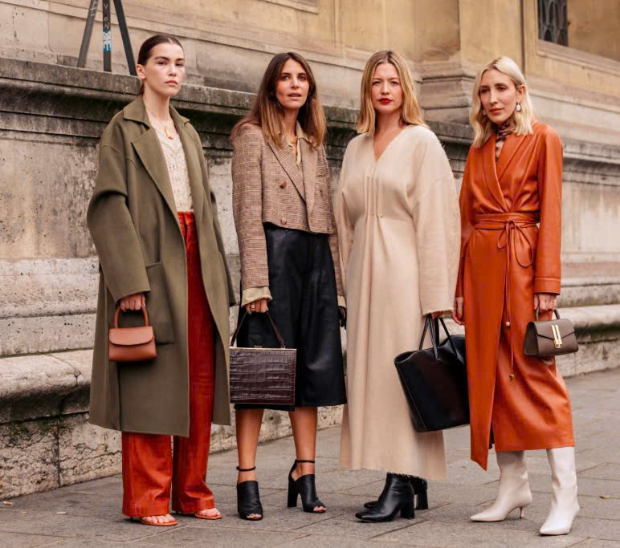
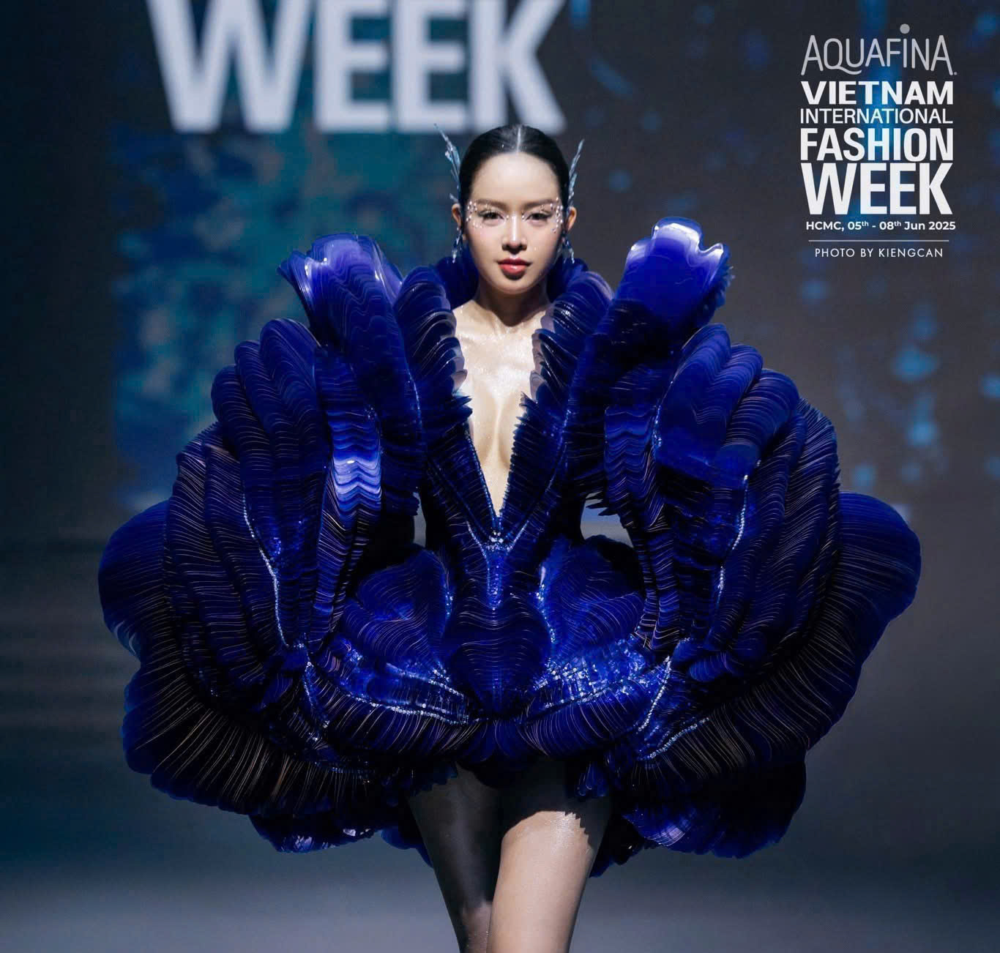
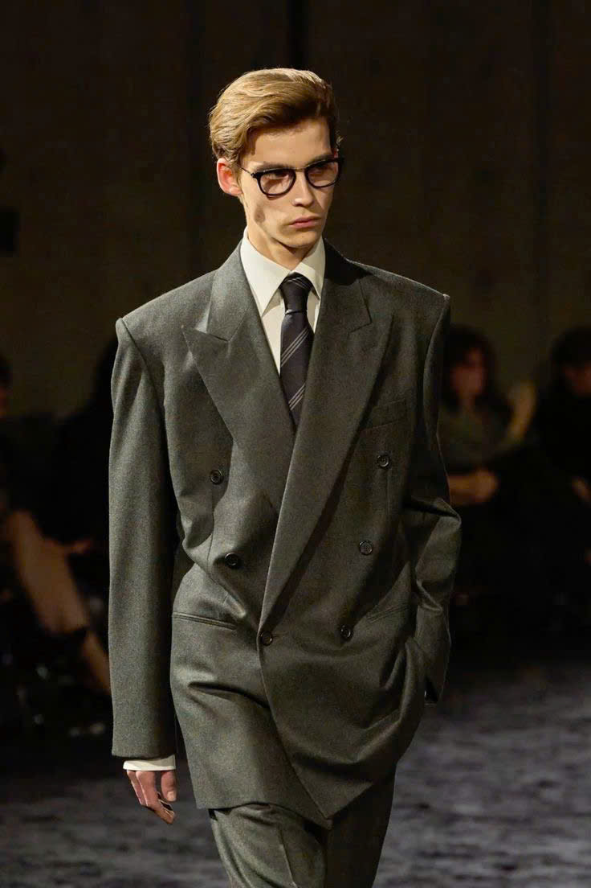

Với chủ đề “Trang phục – Sắc màu Việt Nam”, những hình ảnh từ các sàn diễn quốc tế như Paris Fashion Week, Milan Fashion Week hay New York Fashion Week đã trở thành nguồn cảm hứng để thời trang Việt Nam học hỏi và phát triển theo tinh thần toàn cầu. Các thiết kế mang kiểu dáng hiện đại, đa dạng như suit cách tân, váy dạ hội, trang phục streetwear hay những bộ cánh mang cấu trúc phá cách cho thấy sự tiếp thu rõ nét về phom dáng, kỹ thuật xử lý chất liệu và tư duy thẩm mỹ quốc tế. Tuy nhiên, sự tiếp nhận ấy không hề rập khuôn mà được sáng tạo lại để phù hợp với vóc dáng, thị hiếu và bối cảnh văn hóa Việt Nam. Sự hòa quyện giữa tinh thần quốc tế và góc nhìn bản địa đã tạo nên diện mạo thời trang Việt trẻ trung, năng động, thể hiện rõ bản lĩnh hội nhập và khát vọng khẳng định mình trên bản đồ thời trang thế giới.